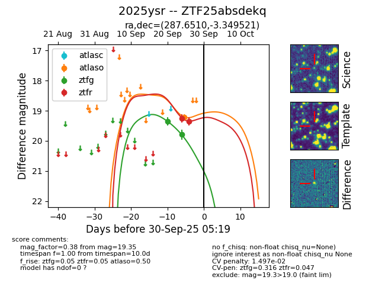
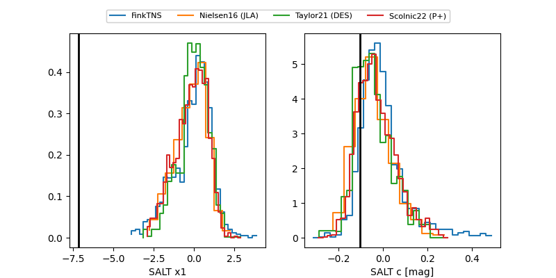

FINK: ZTF25absdekq
Lasair: ZTF25absdekq
ALeRCE: ZTF25absdekq
TNS: 2025ysr
YSE: 2025ysr
ZTF25absdekq (ztf,fink)
2025ysr (tns,yse)
equatorial (ra, dec) = (287.6510,-3.34952)
galactic (l, b) = (32.1270,-5.78842)


last atlaso=19.21, ztfg=19.79, ztfr=19.35
1 atlaso, 2 ztfg, 2 ztfr detections